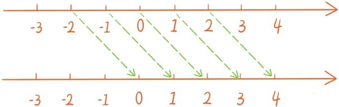
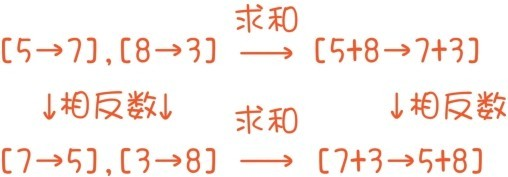
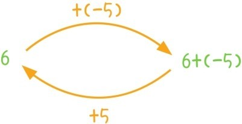
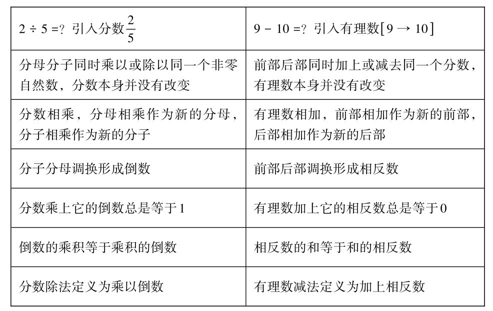

上一节，我们加入负数将分数扩充为有理数，为了说明负数作为数的合法性，我们需要定义有理数的加减乘除运算，并验证运算律。这一节我们讲有理数的加减运算。
两个有理数，比如[11→3]和[5→7]，相加该等于多少呢？假如一个男人手头有11万元钱，欠别人3万元，那这个男人的资产就是[11→3]万元钱。一个女人手头有5万元钱，却欠别人7万元，那这个女人的资产就是[5→7]万元钱。如果他们结婚了，那这个新家庭可支配的钱就是(11+5)万元钱，家庭债务就是(3+7)万元，因此家庭总资产就是[11→3]+[5→7]=[11+5→3+7]。这就引出了有理数的加法法则：
两个有理数相加时，将它们的前部相加作为新的前部，后部相加作为新的后部。
写成公式就是[a→b]+[c→d]=[a+c→b+d]。注意，这与之前的分数乘法法则完全相似，完全相似！根据这个加法法则，我们来计算几个简单的例子
11+(-3)=[11→0]+[0→3]=[11→3]=[8→0]=8；
5+(-9)=[5→0]+[0→9]=[5→9]=[0→4]=-4；
-8+(-13)=[0→8]+[0→13]=[0→21]=-21。
解释有理数加法满足加法交换律和加法结合律，就和之前解释分数乘法满足乘法交换律和乘法结合律是一模一样的。这个解释留给各位读者去解答。
如果将所有有理数都加上2，这时每个有理数都转换成一个新的有理数，这种转换相当于是让整条数轴向右平移2。

类似地，让所有有理数都加上-1相当于是让整条数轴向左平移1。所以有理数的加法还可以看成是数轴的平移。
学有理数减法的时候，不少学生会问：
问题15：为什么6-(-9)=6+9，(-5)-(-11)=(-5)+11，为什么减去负数会等于加上正数？
接下来将定义有理数减法，并解答这个问题。之前为了定义分数除法，引入倒数的概念，现在的做法是完全类似的。为了定义有理数减法，引入相反数的概念，有理数将其前部后部调换之后形成的有理数称为原先有理数的相反数。比如5=[5→0]的相反数是[0→5]=-5，的相反数是，0的相反数还是0。有理û4→0数正是由分数和它们的相反数构成的。相反数的特征是，任何有理数加上它的相反数总是等于0，比如
[11→3]+[3→11]=[11+3→3+11]=0。
从数轴上看，任何有理数（0除外），和它的相反数都是位于原点的两边，且到原点的距离相等。我们将有理数和原点的距离称为有理数的绝对值，用符号“||”表示，例如|-5|=5，|4|=4。一个有理数完全由它的绝对值和符号确定。我们之前讲分数倒数时，提到倒数的乘积等于乘积的倒数，相反数也有类似特征：两个有理数的和的相反数等于它们相反数的和。

根据加法结合律，加上一个有理数，和加上它的相反数，这两个过程是互逆的，比如[6+(-5)]+5=6+[(-5)+5]=6。

为了让有理数减法成为有理数加法的逆过程，将减去一个有理数定义为加上它的相反数。这样，问题15就自然得到解答了。根据这个定义
9-10=9+(-10)=[9→0]+[0→10]=[9→10]
这和我们刚开始所期望的9-10=[9→10]也是吻合的，[9→10]其实就是9-10。所以，在有理数范围内引入相反数后，减法变成是由加法派生的，减法无非就是加上相反数。所以有理数的加减表达式，本质上都是和式，比如6-4+2-5实质上就是6+(-4)+2+(-5)。如果在有理数的加减表达式中出现括号，学生常常会被告知这样一种去括号法则：在减号后面去括号时，括号中每一项都要改变符号。比如
5-(-22+61-7)=5+22-61+7。
但是学生常常会问
问题16：为什么5-(-22+61-7)=5+22-61+7？为什么在减号后面去括号时，括号中每一项都要改变符号？
注意5-(-22+61-7)就是5加上-22+61-7的相反数，根据和的相反数等于相反数的和的法则，-22+61-7的相反数正是22-61+7。
下面表格梳理了分数乘除法，与有理数加减法的类比，这种类比是非常有启发性的。

提问时间
1.9.1 计算-14+15；14+(-9)；7-13；-6-(-9)。
1.9.2 数轴的一个平移变换，把2变换为 ，那么它会把1变换为哪个数，又会把哪个数变换为3？
1.9.3 求数轴上-6和4的距离，-8和3- 的距离，能否由此总结出一个规律？
1.9.4 请完整解释为什么有理数加法运算满足加法交换律和加法结合律。